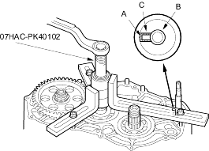
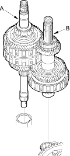

Housing puller, 07HAC-PK40102
NOTE: Refer to the Exploded View as needed during the following procedure.
- Remove the mainshaft speed sensor and sensor washer.
NOTE: The mainshaft speed sensor washer is equipped on the SLXA transmission; the BMXA transmission does not have the washer. - Remove the transmission housing mounting bolts, transmission hanger and connector bracket.
- Align the spring pin (A) on the control shaft (B) with the transmission housing groove (C) by turning the control shaft.
NOTE: Be careful not to squeeze the end of the control shaft tips together when turning the shaft. If the tips are squeezed together it will cause a faulty signal or position due to the play between the control shaft and the switch.

- Install the special tool over the mainshaft, then remove the transmission housing.
NOTE: If the top arm of your housing puller is too short, replace it with Housing Puller Arm, 205 mm, 07SAC-P0Z0101.
- Remove the countershaft reverse gear collar, countershaft reverse gear and needle bearing.
- Remove the lock bolt securing the shift fork, then remove the shift fork with the reverse selector together.
- Remove the mainshaft sub-assembly (A) and countershaft sub-assembly (B) together.

- Remove the differential assembly.